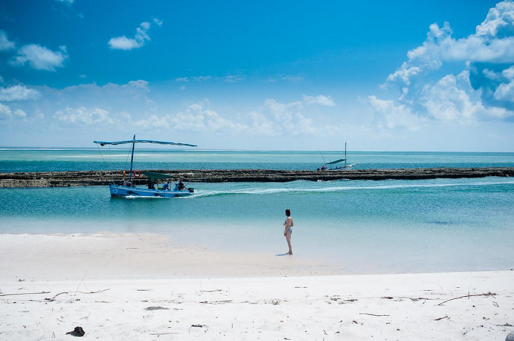
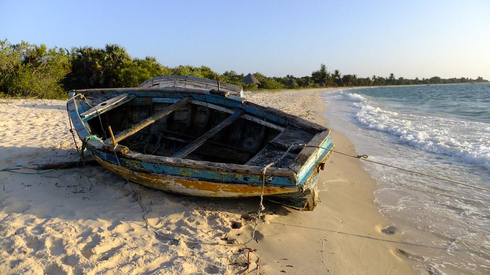
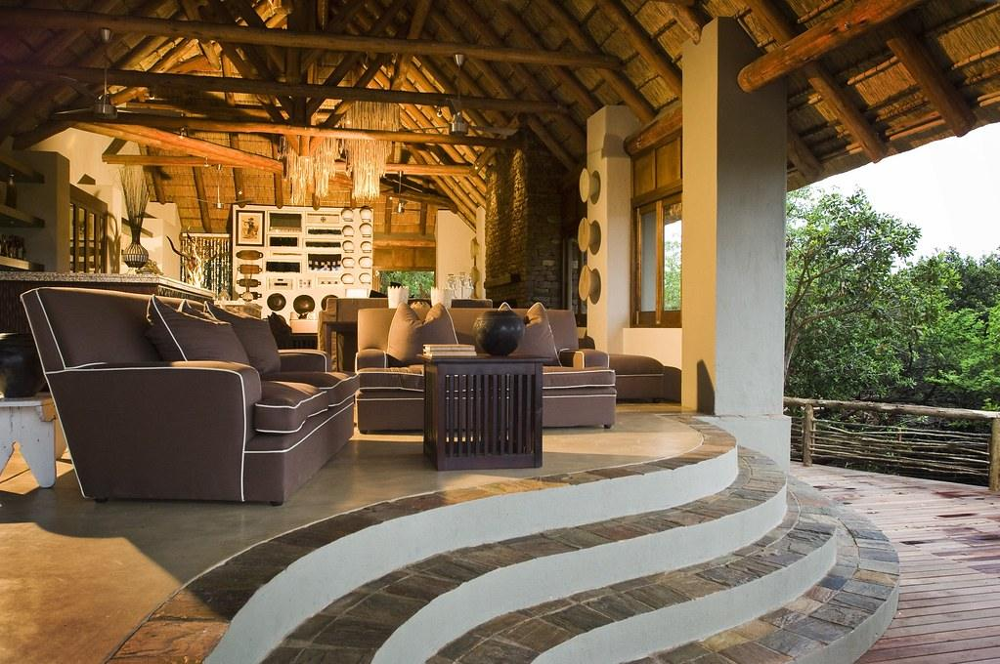
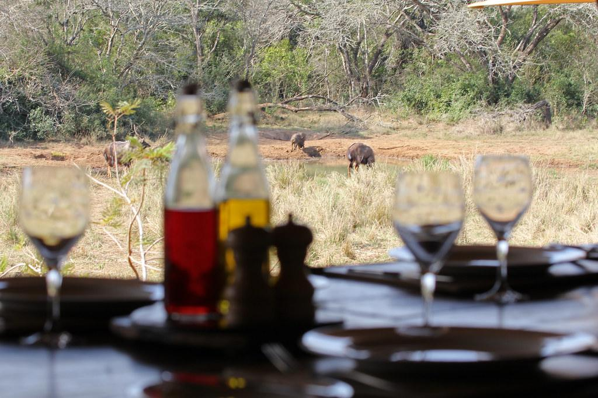
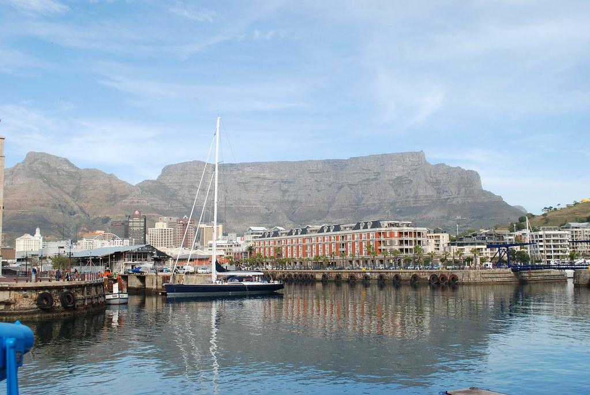
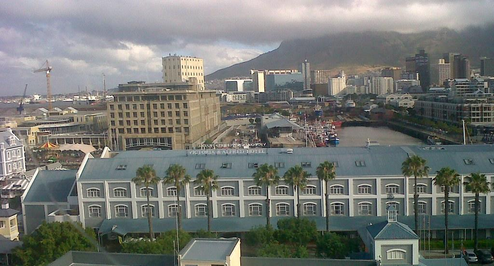
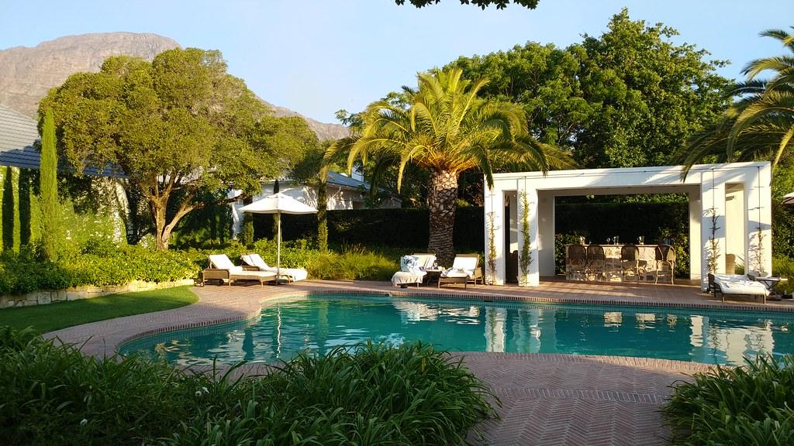
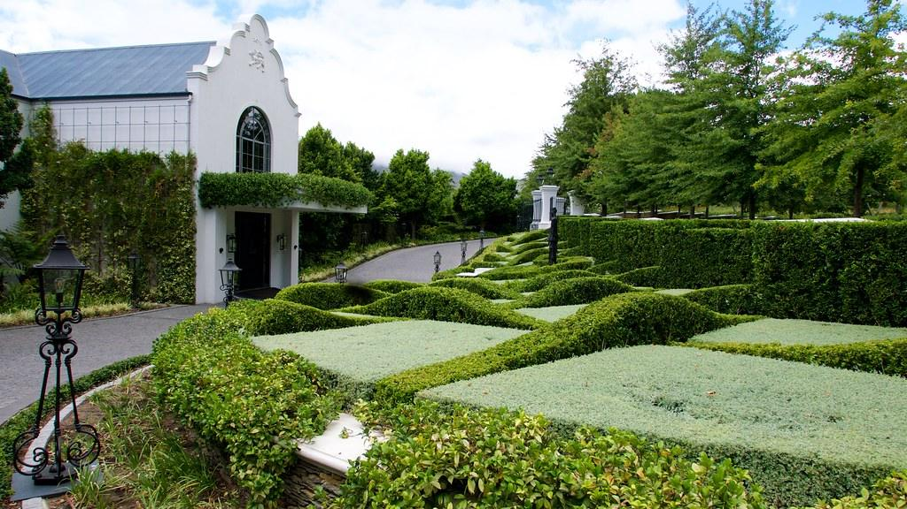

Spinelli and Friends · 22 dez 2026 a 4 jan 2027 · Moçambique e África do Sul
África 2026–27
Os 111 animais do roteiro, do recife de Bazaruto ao mato de Phinda e à costa fria do Cabo, com foto, números, filhotes, superpoderes e pontos fracos de cada espécie. E também o mapa da rota, os hotéis e a agenda dia a dia.
Cerca de 2.000 km de ponta a ponta: do Oceano Índico morno de Moçambique ao Atlântico gelado do Cabo, passando pela savana da Zululândia.
voohelicópteroestrada● hospedagem
22 dez
Joanesburgo → Vilankulo → BenguerraVoo regional e helicóptero sobre o arquipélago
26 dez
Benguerra → Vilankulo → Kruger Mpumalanga → PhindaHelicóptero, voo fretado e imigração em MQP
29 dez
Phinda → Kruger Mpumalanga → Cidade do CaboVoo fretado e Airlink 4Z 664, 13h30 → 16h05
2 jan
Cidade do Cabo → Stellenbosch → FranschhoekCom o guia particular, passando pelas vinícolas
4 jan
Franschhoek → Cidade do Cabo → São PauloLATAM LA 8061, 15h40 → 18h55 em Guarulhos
Onde vocês vão dormir, comer e brindar
Hotéis e restaurantes
Histórias e curiosidades das quatro bases da viagem e dos lugares ao redor, para puxar assunto no jantar.
Benguerra vista do alto: dunas, bancos de areia e o canal · Tom Corser · CC BY-SA · Wikimedia Commons4noites22–26 dez

Dhow na praia de areia branca do arquipélago · Tomas Forgac · domínio público · Flickr

Barco de pesca na praia de Benguerra · dmitri_66 · CC BY-NC · Flickr
Ilha de Benguerra, Arquipélago de Bazaruto, Moçambique
&Beyond Benguerra Island
Lodge de praia de luxo na segunda maior ilha do Arquipélago de Bazaruto, dentro de um parque nacional marinho. As casas ficam de frente para o Oceano Índico, com piscina privativa e decoração que lembra a herança portuguesa de Moçambique.
O lodge tem 10 casinhas, 2 cabanas e uma casa de família com três quartos, a Casa Familia.
As casas têm telhado de palha, chuveiro ao ar livre e piscina privativa.
Em 2015 o lodge passou por uma reconstrução de cerca de 5,5 milhões de dólares.
A decoração mistura estilo tropical, toques africanos e referências à herança portuguesa de Moçambique.
O lodge fica ao lado de um canal de águas profundas permanente, bom para mergulho.
Há centro de mergulho com cursos PADI e uma piscina de borda infinita de frente para o mar.
Entre as atividades estão snorkel, caiaque, passeio a cavalo sem sela na água rasa e passeio de dhow ao pôr do sol.
O jantar mistura influências africanas, portuguesas e mediterrâneas, com frutos do mar frescos todos os dias.
O bar serve coquetéis tradicionais moçambicanos.
A chegada é por helicóptero, cerca de 10 minutos a partir de Vilankulo.
Suíte entre as árvores de um lodge de Phinda · Traveloscopy · CC BY-ND · Flickr3noites26–29 dez

Sala de estar de um lodge de Phinda · Traveloscopy · CC BY-ND · Flickr

Almoço no mato em Phinda · Lawrence OP · CC BY-NC-ND · Flickr
Reserva Privada de Phinda, KwaZulu-Natal, África do Sul
&Beyond Phinda Forest Lodge
Lodge de 16 suítes de vidro sobre palafitas, escondidas numa rara floresta seca de areia. Foi aberto em 1994 e renovado em 2023, com forte influência do artesanato zulu.
O lodge abriu em 1994 dentro da Reserva de Phinda.
São 16 suítes sobre palafitas, com paredes de vidro voltadas para a floresta de areia.
Para proteger a floresta, a área ocupada pelas suítes não pôde ser mudada na reforma. Todo o trabalho foi interno.
A renovação de 2023 teve arquitetura de Jack Alexander e interiores de Fox Browne Creative.
Paredes e tetos são revestidos com esteiras de capim tradicionais zulus, e as banheiras são envoltas em junco trançado.
As luminárias se inspiram em colares tradicionais zulus.
A nova sala The Gallery exibe 43 gravuras de Cecil Skotnes da série "The Assassination of Shaka".
A reforma trouxe spa, academia, piscina de borda e um bar de mármore de sete metros.
Fachada do Victoria & Alfred Hotel no cais · hickey-fry.com · CC BY · Flickr4noites29 dez–2 jan

A Waterfront com a Table Mountain ao fundo · George M. Groutas · CC BY · Flickr

O hotel visto de cima, com a cidade atrás · Ula Gillion · CC BY · Flickr
V&A Waterfront, Cidade do Cabo, África do Sul
Victoria & Alfred Hotel
Hotel histórico instalado num antigo armazém do porto, construído em 1904, no coração do V&A Waterfront. Tem vista para a Alfred Basin e para a Table Mountain.
O prédio é o antigo North Quay Warehouse, construído em 1904 como depósito de carvão e armazém de bagagem da alfândega.
Virou hotel em 1990, um dos primeiros projetos de reuso de prédios históricos no Waterfront.
O nome homenageia a rainha Vitória e o filho dela, o príncipe Alfred.
Grande parte da fachada e do interior original foi preservada.
O hotel foi renovado em 2023.
Tem 94 quartos, com vista para a Alfred Basin, para a Piazza ou para a Table Mountain.
No mesmo prédio funciona o Alfred Mall.
Gramado e jardins da Leeu Estates com as montanhas de Franschhoek · wbayer.com · CC0 · Flickr2noites2–4 jan

Piscina da Leeu Estates · wbayer.com · CC0 · Flickr

Casa em estilo cape dutch e jardins formais · wbayer.com · CC0 · Flickr
Franschhoek, Cape Winelands, África do Sul
Leeu Estates
Propriedade vinícola de luxo no vale de Franschhoek, criada pelo empresário indiano Analjit Singh. Combina vinhedos, jardins com esculturas, spa e a vinícola Mullineux & Leeu.
O dono é o empresário indiano Analjit Singh, fundador da Leeu Collection.
"Leeu" quer dizer leão em africâner, uma referência ao sobrenome Singh.
Singh visitou Franschhoek pela primeira vez em 2010, parou para um sanduíche e decidiu voltar.
Ele passa cerca de seis meses por ano em Franschhoek, numa vila privada dentro da Leeu Estates.
Em 2013 Singh se associou a Chris e Andrea Mullineux na vinícola Mullineux & Leeu Family Wines.
O Wine Studio, onde são feitas as degustações, foi projetado pelo arquiteto espanhol Tomeu Esteva.
Os jardins têm esculturas monumentais, como a "Artemis" de bronze de Deborah Bell no gramado da Manor House.
Há uma galeria Everard Read na propriedade, com esculturas expostas entre o fynbos e os vinhedos.
As hortas e pomares Leeu Locally Grown abastecem a cozinha do The Dining Room.
O Leeu Spa by Healing Earth oferece uma vinoterapia com Pinotage.
Os lugares
Parque Nacional do Arquipélago de Bazaruto
O parque foi criado em 25 de maio de 1971, na província de Inhambane.
Tem cerca de 1.430 km² e inclui cinco ilhas: Bazaruto, Benguerra, Magaruque, Santa Carolina e Bangué.
Bazaruto é a maior ilha. Benguerra é a segunda maior, com cerca de 55 km².
O parque abriga a maior e última população viável de dugongos do Oceano Índico ocidental.
É o único lugar conhecido no Índico ocidental onde as cinco espécies de tartaruga marinha da região fazem ninhos.
Há mais de 2.000 espécies de peixes, seis espécies de golfinhos e tubarões-baleia de outubro a abril.
Benguerra tem três lagoas de água doce com crocodilos, sinal de que a ilha já foi ligada ao continente.
Desde 2017 o parque é gerido pela African Parks junto com a autoridade de conservação de Moçambique.
Vilankulo (Vilanculos)
Cidade costeira da província de Inhambane, porta de entrada para o Arquipélago de Bazaruto.
O nome homenageia o chefe local Gamela Vilankulo Mukoke.
No período colonial se chamava Vilanculos. O nome mudou para Vilankulo na independência.
Dhows e helicópteros fazem a ligação entre a cidade e as ilhas.
O aeroporto tem voos regionais diários, inclusive para Joanesburgo e Maputo.
O clima é quente o ano todo, e janeiro e fevereiro são os meses mais chuvosos.
Reserva Privada de Phinda
Phinda quer dizer "o retorno" em zulu, uma referência à recuperação de antigas fazendas degradadas.
A reserva foi criada em 1991 pela empresa que viria a se chamar &Beyond, então Conservation Corporation Africa.
Tem cerca de 28.500 hectares e sete habitats, incluindo cerca de 1.000 hectares de rara floresta seca de areia.
Abriga os Big Five, guepardos e 436 espécies de aves.
Rinocerontes brancos, nialas, guepardos e elefantes foram reintroduzidos. Os guepardos chegaram em 1993, vindos da Namíbia.
Em 2007 o governo devolveu cerca de 11.500 hectares às comunidades Makhasa e Mnqobokazi, com a condição de que a terra continuasse como área de conservação.
A &Beyond arrenda a terra das comunidades, que participam dos resultados econômicos da reserva.
Em maio de 2024 a área recebeu 40 rinocerontes brancos no programa Rhino Rewild, da African Parks.
Cidade do Cabo
Foi fundada em 1652 por Jan van Riebeeck como ponto de apoio para navios da Companhia Holandesa das Índias Orientais.
É a cidade mais antiga da África do Sul e sede do Parlamento do país.
A Table Mountain chega a 1.113 metros de altitude.
Robben Island, onde Nelson Mandela passou 18 dos seus 27 anos de prisão, é Patrimônio Mundial da UNESCO desde 1999.
Bartolomeu Dias chamou a região de Cabo das Tormentas. O rei João II de Portugal mudou o nome para Cabo da Boa Esperança.
O verão, de dezembro a março, é quente e seco, com máximas médias de 26 °C.
V&A Waterfront
Em 17 de setembro de 1860 o príncipe Alfred, segundo filho da rainha Vitória, lançou a primeira pedra do quebra-mar do porto.
O nome Victoria & Alfred homenageia a rainha e o príncipe. A Alfred Basin leva o nome dele.
Fica no porto ativo mais antigo do Hemisfério Sul.
A Clock Tower, de 1882, era o escritório do capitão do porto. Ela tem uma leve inclinação.
Em 1882 o porto foi a primeira parte da Cidade do Cabo a ter eletricidade.
Os silos de grãos de 1921 viraram o museu Zeitz MOCAA e o Silo Hotel em 2017.
A revitalização começou em 1988, e hoje o Waterfront recebe cerca de 24 milhões de visitantes por ano.
Franschhoek
O nome quer dizer "canto francês" em africâner.
Antes se chamava Oliphants hoek, por causa dos elefantes que viviam no vale.
Quase 300 huguenotes franceses chegaram em 1688, depois que Luís XIV proibiu o protestantismo na França em 1685.
Muitas fazendas mantêm nomes das regiões francesas de origem, e várias hoje são vinícolas.
O Monumento aos Huguenotes e o Huguenot Memorial Museum contam essa história.
O Franschhoek Wine Tram, que leva turistas entre vinícolas, usa um antigo ramal ferroviário reativado em 2012.
Fica a cerca de 75 km da Cidade do Cabo.
Restaurantes previstos no roteiro
Lista do roteiro da Bellingham. O BAIA, o jantar na Leeu e o Protégé ainda estão sem horário definido.
29 dezjantar · 19h
La Parada
V&A Waterfront, Cidade do Cabo
Restaurante de tapas de inspiração espanhola, criado pelo chef Neil Anthony, com pratos para compartilhar. Tem dois andares e vista para o porto e a Table Mountain.
30 dezalmoço · 13h
Villa 47
47 Bree Street, centro da Cidade do Cabo
Restaurante italiano em um prédio de três andares, com espaços como Locanda e Martini Terrazza. Cozinha italiana com toque moderno e local.
30 dezjantar · 19h
Nobu
One&Only Cape Town, V&A Waterfront
Primeiro Nobu da África, do chef Nobuyuki "Nobu" Matsuhisa, aberto em 2009 junto com o hotel One&Only Cape Town.
31 dezalmoço
Piquenique gourmet
Reserva do Cabo da Boa Esperança
Servido pelo guia particular num lugar reservado durante o passeio pela península: sanduíches ou wraps, petiscos e bebidas.
31 dezjantar
BAIA Seafood Restaurant
Victoria Wharf, V&A Waterfront
Restaurante de frutos do mar com toque português, com vista para o porto e a Table Mountain. A especialidade da casa é a cataplana.
1 janalmoço · 12h
Surfshack
201 The Promenade, Victoria Road, Camps Bay
Restaurante de praia descontraído do grupo Kove Collection, de frente para o mar em Camps Bay. Destaques: camarão crocante de arroz e o Poor Man's Lobster Roll, com camarão grelhado no pão brioche.
1 janjantar · 19h
COY
Scherwyn Pavilion Building, V&A Waterfront
Alta gastronomia descontraída do chef Ryan Cole, do premiado Salsify. Menu de sete tempos inspirado no oceano e na despensa africana, com vista para a marina e a Table Mountain.
2 janalmoço · 12h
The Postcard Café
Stark-Condé Wines, vale de Jonkershoek, Stellenbosch
Café da vinícola Stark-Condé, conhecido por um dos cenários mais bonitos das Winelands. Serve refeições leves no café da manhã e no almoço.
2 jandegustação · 14h30
Anthonij Rupert Wyne
Propriedade L'Ormarins, Franschhoek
Vinícola da família Rupert na histórica fazenda L'Ormarins. A marca homenageia Anthonij Rupert, irmão de Johann Rupert, e há salas de degustação separadas para as linhas Anthonij Rupert e Terra del Capo.
2 janjantar
The Dining Room at Leeu Estates
Leeu Estates, Franschhoek
Cozinha sazonal da horta à mesa, com ingredientes das hortas Leeu Locally Grown. O menu é à la carte e os pratos são harmonizados com vinhos Leeu Passant.
3 janalmoço · 12h
The Greenhouse
Babylonstoren, Simondium
Estufa de vidro nos jardins da fazenda Babylonstoren, com pratos sazonais feitos com o que é colhido ali: saladas, sanduíches e sucos.
3 jandegustação · 15h30
Mullineux & Leeu
Wine Studio, Leeu Estates, Franschhoek
Degustações guiadas dos vinhos de Chris e Andrea Mullineux, produzidos no Swartland e em Franschhoek. Opções: Mullineux Signature, Single Terroir e Leeu Passant.
3 janjantar
Protégé
Le Quartier Français, Franschhoek
Restaurante do grupo La Colombe, criado em 2018 sob orientação do chef Scot Kirton para revelar jovens talentos, daí o nome. Cozinha com influências asiáticas e francesas, em torno de uma cozinha aberta.
A programação do roteiro com os bichos mais prováveis de cada dia. Toque no nome do animal para abrir a ficha completa.
22 dezter · Bazaruto
Chegada a Moçambique
Pouso em Joanesburgo e conexão para Vilankulo (11h15 a 12h50)
Helicóptero até Benguerra, por cima dos bancos de areia do arquipélago
Procure hoje
No helicóptero, quem estiver na janela do lado do mar deve olhar para os bancos de capim marinho, que é onde os dugongos aparecem como manchas cinza.
23 dezqua · Bazaruto
Primeiro dia no recife
Mergulho de checagem e primeiro mergulho de barco, no horário da maré parada
Snorkel nos bancos rasos à tarde
Procure hoje
Faça o primeiro mergulho com calma para acertar o lastro. A água a 27 °C engana: o corpo perde calor em mergulhos longos.
24 dezqui · Bazaruto
Pesca ou Two Mile Reef · Véspera de Natal
Saída de pesca oceânica (corrico para marlim, popping para GT) ou mergulho em Two Mile Reef
Último dia de mergulho com cilindro, por causa do voo do dia 26
Procure hoje
Tome o remédio para enjoo uma hora antes de embarcar. Na pesca, siga as aves: onde elas mergulham há cardume e predador embaixo.
25 dezsex · Bazaruto
Natal na ilha
Snorkel, caiaque, stand-up paddle ou passeio de dhow (veleiro tradicional)
Passeio aos lagos de água doce do interior da ilha
Procure hoje
Hoje é dia sem cilindro. À noite, pergunte se há rastros de desova de tartaruga na praia e ande com lanterna vermelha.
26 dezsáb · Phinda
Do mar para o mato
Helicóptero até Vilankulo e voo fretado, com parada em Kruger Mpumalanga (MQP) para imigração
Chegada a Phinda e primeiro game drive no fim da tarde
Procure hoje
Em dezembro as impalas estão com filhotes recém-nascidos. Repare como as mães deixam os filhotes em “creches” vigiadas por poucas fêmeas.
27 dezdom · Phinda
Atrás dos grandes
Drive da manhã (saída por volta das 5h) e drive da tarde com sundowner
Opção de caminhada guiada no meio do dia
Procure hoje
Phinda é uma das melhores reservas para ver guepardos. Peça ao ranger para procurar nas áreas abertas logo cedo, antes do calor.
28 dezseg · Phinda
Floresta de areia e noite
Drive com foco na floresta de areia ao redor do Forest Lodge
Drive noturno na volta do sundowner
Procure hoje
Na floresta de areia, ande devagar e em silêncio. O suni some ao menor barulho, e o trogon fica de costas, imóvel, num galho à sombra.
29 dezter · Cabo
Rumo ao Cabo
Último drive matinal em Phinda
Voo Airlink 4Z 664: Kruger Mpumalanga 13h30 → Cidade do Cabo 16h05
Guia particular no aeroporto e transfer para o Victoria & Alfred
19h · Jantar no La Parada
Procure hoje
No último drive, peça ao ranger o que ainda falta na sua lista. Na Waterfront, os lobos-marinhos costumam descansar nos píeres perto do hotel.
30 dezqua · Cabo
Table Mountain e a cidade
9h · Saída do hotel com o guia particular
Bondinho da Table Mountain com fila rápida (fast-track)
Passeio pela cidade
13h · Almoço no Villa 47
Tarde livre na V&A Waterfront · volta ao hotel por volta das 17h
19h · Jantar no Nobu
Procure hoje
No topo da Table Mountain os dassies tomam sol nas pedras perto das trilhas. O bondinho fecha com vento forte, e o guia acompanha a previsão.
31 dezqui · Cabo
Península do Cabo · Réveillon
7h30 · Saída do hotel
Boulders Beach e os pinguins-africanos
Reserva do Cabo da Boa Esperança (Cape Point)
Piquenique gourmet servido pelo guia num lugar reservado
Noordhoek Farm Village e a estrada Chapman's Peak
Volta ao hotel por volta das 17h · jantar no BAIA e fogos da Waterfront à meia-noite
Procure hoje
Em Cape Point, feche o carro e não deixe comida à vista por causa dos babuínos. Na Chapman's Peak, olhe o mar: às vezes aparecem golfinhos e focas.
1 jansex · Cabo
Kirstenbosch e a orla
9h · Saída do hotel
Jardim Botânico de Kirstenbosch
12h · Almoço no Surfshack (Camps Bay)
Passeio de bicicleta pela orla com o guia
Volta ao hotel por volta das 17h
19h · Jantar no COY
Procure hoje
Em Kirstenbosch, procure os açucareiros nas proteas floridas. O de cauda comprida é o macho.
2 jansáb · Cabo
Stellenbosch e as Winelands
9h · Saída do Victoria & Alfred
Passeio por Stellenbosch e caminhada pela Art Mile
12h · Almoço no Postcard Café (Stark-Condé, vale de Jonkershoek)
14h30 · Degustação na Anthonij Rupert
Chegada à Leeu Estates por volta das 17h · jantar no próprio hotel
Procure hoje
Nos jardins da Leeu, ouça a perdiz-do-cabo cantando no fim da tarde.
3 jandom · Cabo
Franschhoek e Babylonstoren
9h · Saída da Leeu Estates
Passeio por Franschhoek
Jardins de Babylonstoren
12h · Almoço no The Greenhouse (Babylonstoren)
15h30 · Degustação na Mullineux & Leeu
Volta à Leeu por volta das 17h · jantar no Protégé
Procure hoje
Os jardins de Babylonstoren atraem nectarinas e açucareiros. Nas trilhas, olhe onde pisa.
4 janseg · Cabo
Despedida
11h · Saída da Leeu Estates e transfer ao aeroporto
Voo LATAM LA 8061: Cidade do Cabo 15h40 → São Paulo (Guarulhos) 18h55
Contem os carimbos de “visto” do grupo no caminho para o aeroporto.
Atualiza com internet
Clima e previsão
O clima típico de dezembro em cada base e a previsão de 16 dias, que se atualiza sempre que o celular tiver internet. A previsão começa a cobrir as datas de vocês por volta de 7 de dezembro.
Verão no hemisfério sul
Por que dezembro é especial
No leste é a estação chuvosa: o mato fica verde e denso, o que dificulta um pouco a visão, mas em compensação é a época dos filhotes e das aves migratórias.
Bazaruto
Água a 27–28 °C. Visibilidade costuma ficar entre 15 e 30 m.
Tartarugas desovam nas praias do arquipélago (novembro a fevereiro).
Alta temporada do marlim-negro (outubro a dezembro).
Tubarão-baleia e mantas aparecem mais no verão.
As baleias-jubarte já foram embora (a temporada é de junho a outubro).
Phinda
Pico de nascimentos de impalas, gnus e javalis: muitos filhotes, e os predadores ficam ativos.
Calor de 30 °C ou mais à tarde, com tempestades curtas no fim do dia.
Chegam as aves migratórias da Europa e do norte da África (abelharucos, cucos, martim-pescador-dos-bosques).
Época de besouros rola-bosta, sapos e camaleões, ótima para os game drives noturnos.
Cabo
Verão seco e ventoso: o vento sudeste, chamado “Cape Doctor”, sopra forte.
Muitos pinguins estão em muda, com aparência despenteada, e ficam em terra por cerca de três semanas.
O fynbos está florido e as proteas atraem as aves nectarívoras.
A água do Atlântico é fria (12–16 °C) e cheia de focas.
111 espécies · fotos do iNaturalist
Animais
Escolha a parte da viagem. Toque em “Ficha completa” para ver números, filhotes, superpoder, ponto fraco e curiosidades, e marque “Vi!” quando encontrar o bicho.
CR criticamente em perigoEN em perigoVU vulnerávelNT quase ameaçadoLC pouco preocupanteDD dados insuficientes●●●● quase certo · ●●●○ provável · ●●○○ possível · ●○○○ raro
Para conversar com rangers e rastreadores
Vocabulário
Termo de safári
Significado
Game drive
Saída de observação no veículo aberto
Sundowner
Drinque ao pôr do sol, no meio do mato
Tracker
Rastreador que lê pegadas e sinais
Spoor
Rastro: pegadas, fezes, galhos quebrados
Sighting
Avistamento. Rangers trocam sightings pelo rádio
Kill
Presa abatida, que atrai predadores por dias
Midden
Ponto onde rinocerontes ou antílopes defecam sempre
Pronking
Saltos de antílope assustado, com as pernas rígidas
Musth
Período hormonal do elefante macho, quando ele fica agressivo